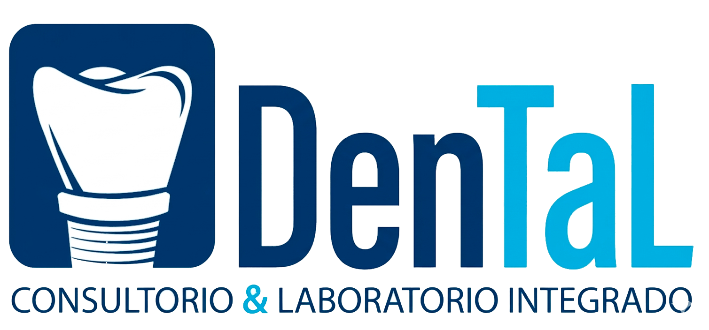
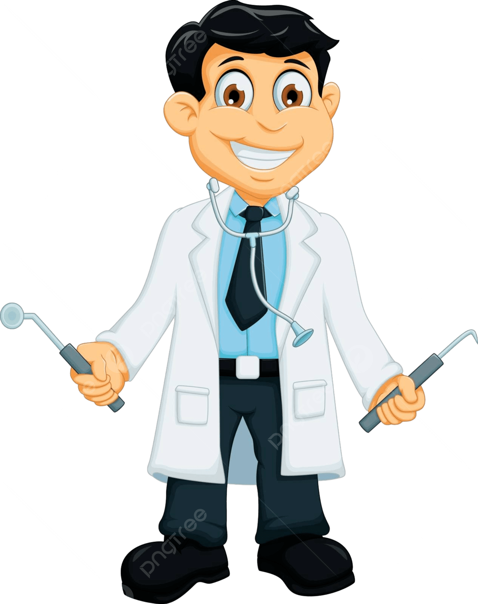

Consultorio Salud Total
Consultorio Salud Total
Somos un consultorio y laboratorio integrado que se formó en el año 2008, desde hace 30 años el Dr. Jose Montejo inicio con la empresa, por lo que contamos con una amplia experiencia. Asi surge Solo Prótesis Dental , al darnos cuenta de la necesidad de los pacientes los cuales no querían estar sin sus piezas dentales, porque afectaba su salud bucal y autoestima. Por lo que decidimos ahorrar el largo esperar del pasar de los trabajos a un laboratorio, asi nosotros asi nosotros hacemos el trabajo, dándonos la oportunidad de ofrecer trabajos el mismo día, como reparaciones inmediatas

Nuestra misión es proporcionar un diagnóstico preciso y brindar atención dental de alta calidad a todos los pacientes que requieran tratamiento. Nos esforzamos por ayudar a nuestros pacientes a recuperar su salud bucal de la manera más adecuada posible.
En el consultorio y laboratorio dental, nos visualizamos liderando la vanguardia en las nuevas técnicas posicionándonos como uno de los mejores consultorios al satisfacer de manera eficaz y eficiente las necesidades de nuestros pacientes.
Nuestro objetivo principal es rehabilitar a nuestros pacientes, permitiéndoles recuperar su sonrisa sin comprometer la comodidad a la hora de hablar o gesticular. Trabajamos para ofrecer soluciones dentales que no sólo sean efectivas, sino que también brinden una experiencia cómoda y satisfactoria para nuestros pacientes.